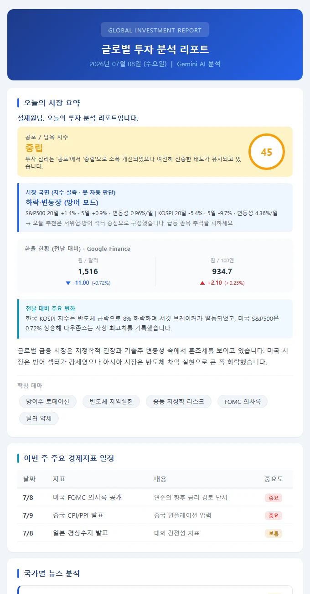

No.01 · 2026.05 ~ 운영 중
투자분석봇
Google Apps Script · Gemini · Google Sheets
매일 아침 8시, 글로벌 시장을 분석한 리포트를 만들어 구독자에게 보내는 봇. 리스크 심사역, 컴플라이언스, 복기 담당, 포트폴리오 매니저까지 7개 AI 역할이 서로의 판단을 검수하고, 성과대장이 그 판단들의 실제 성적을 검증합니다.
- AI 역할 7
- 회귀 테스트 768건
- 추적 포지션 539
- 배포 v7.34
